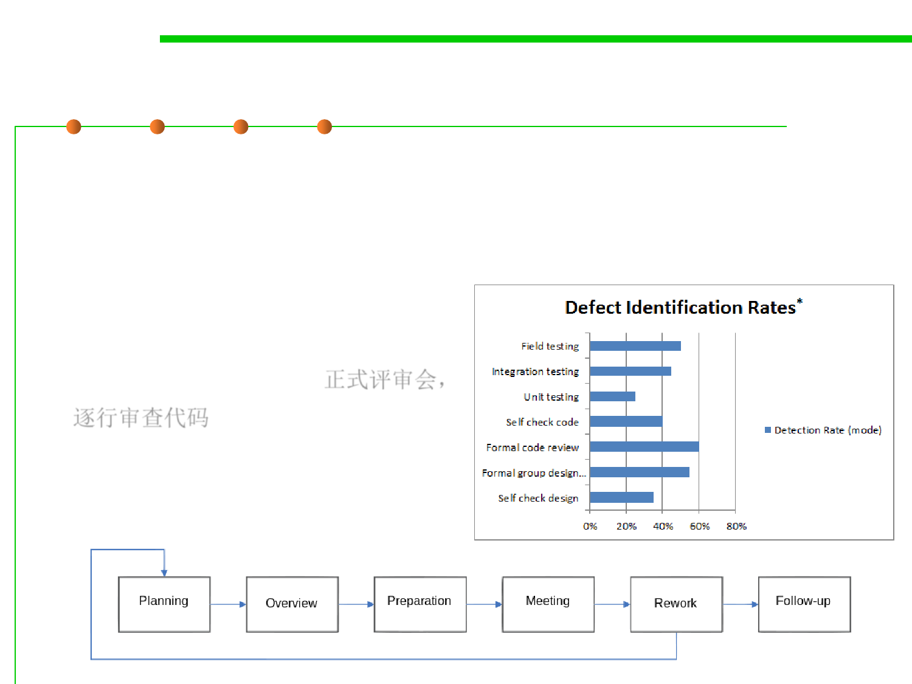

2.2 Process, Systems, and Tools of Software Construction
Formal code review
▪ Formal code review, such as a Fagan inspection(一种结构化的检查
代码和文档缺陷的过程), involves a careful and detailed process
with multiple participants and multiple phases.
– Formal code reviews are the traditional method of review, in
which software developers attend a
series of meetings and review code
line by line, usually using printed
copies of the material. 正式评审会，
逐行审查代码
– Formal inspections are extremely
thorough and have been proven
effective at finding defects in the
code under review.